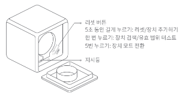

28 스마트 큐브 T1 Pro
28.1 설치
질문 1: 스마트 큐브 T1 Pro의 설치 방법을 알 수 있을까요?
답변 1:
스마트 큐브 T1 Pro의 설치 영상과 매뉴얼은 아래 링크를 클릭하시면 보실 수 있습니다.
질문 2: 스마트 큐브은 어떻게 아카라홈에 설치하나요?
답변 2:
(1) 이 장치를 사용하려면 Zigbee 3.0을 지원하는 허브가 필요합니다. 사용자 매뉴얼에 따라 먼저 앱에 허브를 추가하십시오. 제공된 오프닝 픽으로 배터리 커버를 열어주세요.
(2) 앱을 열고 홈페이지의 오른쪽 상단에 있는 “+”를 클릭하여 “장치 추가” 페이지로 이동하십시오. “큐브 T1 Pro”를 선택하세요.
(2) 연결할 허브를 선택하고 앱의 지침에 따라 진행하십시오. 리셋 버튼을 5초 동안 누르고 허브가 연결에 성공했다는 음성 안내를 기다리십시오.
28.2 사용팁
질문 1: 스마트 큐브가 성공적으로 설치 되었는지 어떻게 확인할 수 있나요?
답변 1:
스마트 큐브를 들고 흔들거나 큐브의 리셋 버튼을 누르세요. 허브에서 음성 안내가 들리면, 장치와 허브가 효과적으로 통신할 수 있다는 것을 나타냅니다.
질문 2: 스마트 큐브의 모드는 어떻게 바꾸나요?
답변 2:
스마트 큐브의 메인 화면에서 우측 상단 ‘…’ 클릭하신 후 기기 설정에 들어가시면 모드를 바꾸실 수 있습니다. 모드에는 장면모드와 동작모드가 있습니다.
질문 3: 스마트 큐브의 배터리는 어떻게 교체 할 수 있나요?
답변 3:
스마트 큐브 의 배터리 커버를 오프닝 픽으로 열고, 배터리를 꺼내 새로운 CR2450 배터리로 교체하세요 (배터리는 양극이 위를 향하도록 넣어야 합니다). 그리고 배터리 커버를 다시 닫으세요.
질문 4: 스마트 큐브는 어떤 기능을 지원하나요?
답변 4:
(1) 90도 회전: 큐브를 들고 90도 돌리세요.
(2) 180도 회전: 큐브를 들고 180도 돌리세요.
(3) 두 번 탭: 큐브를 들고 두 번 탭하세요.
(4) 누르기: 큐브를 평평한 표면에 누르세요.
(5) 회전: 큐브를 평평한 표면 위에서 회전하세요.
(6)흔들기: 큐브를 들고 빠르게 두 번 흔들어주세요.
(7) 1분간 활동이 없을 때 작동: 큐브가 1분 동안 움직이지 않은 후에 작동합니다.
질문 5: 스마트 큐브의 “장면 모드”는 어떤 기능을 지원하나요?
답변 5:
(1) X 면이 위를 향하도록 놓으세요: 큐브의 X 면 (1~6 중 아무거나)을 위로 향하도록 놓으세요.
(2) 흔들기: 큐브를 들고 빠르게 두 번 흔들어주세요.
(3) 들어 올리고 유지하기: 큐브를 들어 올리고 가만히 유지하세요.
(4) 큐브의 X 면이 위를 향할 때: 큐브의 X 면이 현재 위를 향하고 있습니다.
(5) 1분간 활동이 없을 때 작동: 큐브가 1분 동안 움직이지 않은 후에 작동합니다.
질문 6: 스마트 큐브를 휴대폰에 직접 연결할 수 있나요?
답변 6:
스마트 큐브는 아카라 허브가 필요합니다. 먼저 아카라 허브를 아카라앱에 설치하신 후 스마트 큐브를 설치해 주세요.
질문 7: 스마트 큐브의 리셋 버튼은 어디에 있나요?
답변 7:
스마트 큐브의 리셋 버튼은 큐브 안쪽에 위치해 있습니다.

28.3 Troubleshoot
질문 1: 스마트 큐브는 오프라인으로 표시됩니다. 왜 그럴까요?
답변 1:
(1) 허브에서 너무 멀리 떨어져 있을 수 있습니다. 허브에 더 가까이 놓아 보십시오.
(2) 무선 네트워크의 중단 또는 기타 이유로 인해 허브가 오프라인 상태일 수 있습니다.
(3) 배터리가 방전되었을 수 있습니다. 배터리를 교체하고 다시 시도해보세요.
질문 2: 스마트 큐브의 연결이 계속 실패하고 있습니다. 어떻게 다시 연결할 수 있나요?
답변 2:
(1) 작동 오류입니다. 스마트 큐브를 장치 추가 방법에 따라 다시 추가하십시오.
(2) 스마트 큐브가 아카라 허브에서 너무 멀리 떨어져 있습니다. 스마트 큐브를 아카라 허브에 가까이 이동하십시오.
(3) 기존 연결된 또는 연결하고자 하는 아카라 허브에는 32개 이상의 액세서리가 있습니다.